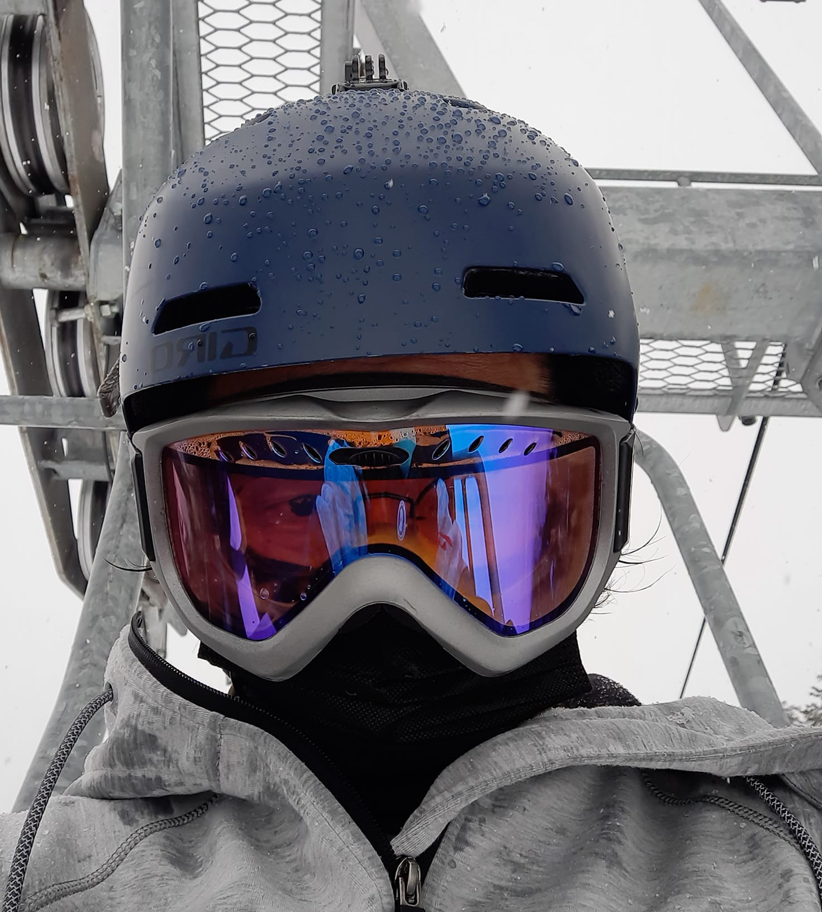

Seyoung Jeong

소프트웨어 엔지니어. 미국에서 일한지는 10년 좀 넘었습니다. 삼 년 전 시애틀로 온 후 시작한 스키에 미쳐 지냈으며, 여름엔 인라인을 탑니다. 7월 뉴욕 이사 예정이네요.
Slef-motivated software engineer. I enjoy skiing, hiking and inline skating when not working. I will move to NYC soon.
- Qualcomm, San Diego, 2008 - 2018
- Microsoft, Redmond, 2018 - 2019
- Amazon, Seattle and New York, 2019 - current